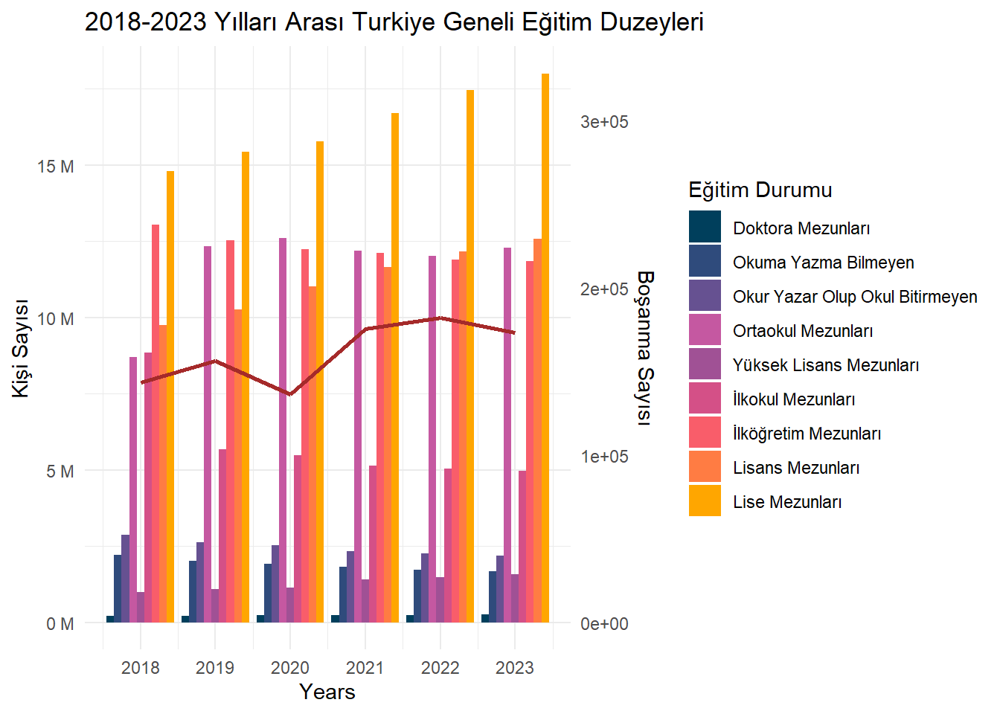
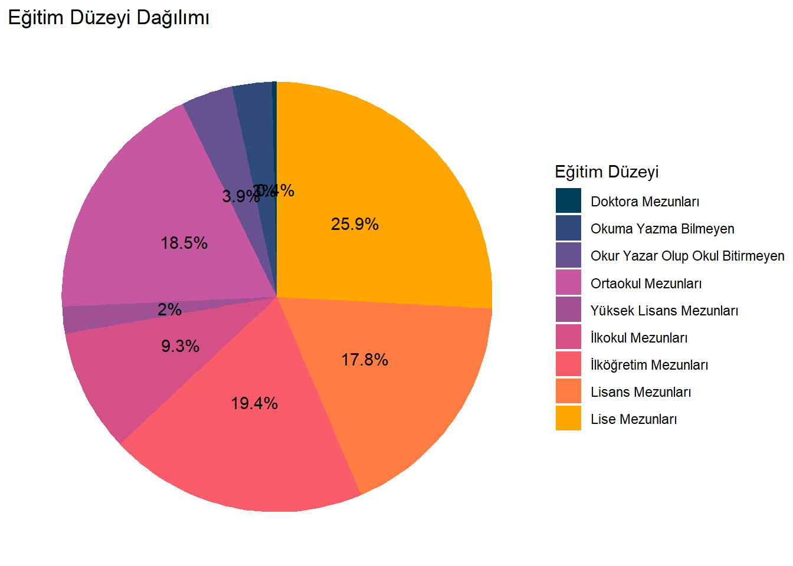
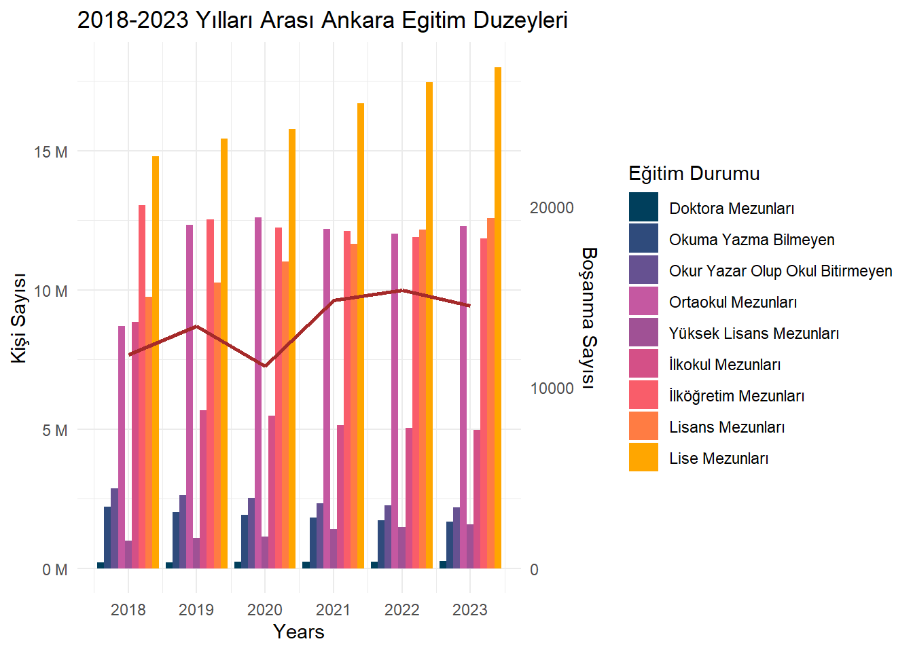
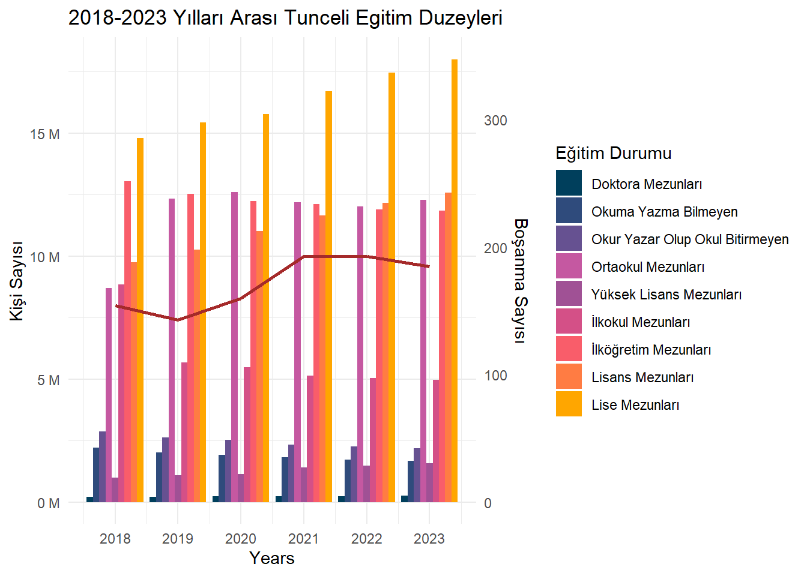

2018-2023 Yılları Arasında Türkiye’deki Boşanmaların Eğitim Düzeyleriyle İlişkisinin İnclenmesi
Proje sayfamıza hoş geldiniz.
Projemizle ilgili güncellemelerden haberdar olmak için bu alanı takip edin.
1 Proje Genel Bakış ve Kapsamı
Bu proje kapsamında, Türkiye’de 2018-2023 yılları arasında illere göre boşanma oranlarının eğitim düzeyiyle olan ilişkisi analiz edilmiştir. Amaç, eğitim düzeylerinin boşanma oranları üzerinde nasıl bir etkisi olduğunu tespit etmek ve yıllara göre bu ilişkinin nasıl değiştiğini ortaya koymaktır.
Veri kaynakları olarak Türkiye İstatistik Kurumu (TÜİK) tarafından sağlanan veriler kullanılmıştır. Bu veriler arasında illere göre bitirilen eğitim durumları, illere göre boşanma sayıları ve illere göre medeni durumlar bulunmaktadır. Veriler R programlama dili kullanılarak işlenmiş, görselleştirilmiş ve analiz edilmiştir.
Bu çalışmada, boşanma oranlarının farklı eğitim seviyeleri ile nasıl bir ilişki içinde olduğu analiz edilerek, elde edilen bulgular üzerinden yorumlar yapılacaktır. Elde edilen veriler grafiksel olarak sunulacak ve yıllara göre boşanma oranlarındaki değişimler incelenecektir.
Bu rapor, boşanma oranlarının eğitim düzeyiyle olan ilişkisini ortaya koyarken, aynı zamanda toplumsal yapı ve eğitim politikaları üzerine de önemli çıkarımlarda bulunmayı hedeflemektedir.
1.1 Tercih Sebebi
Bu araştırmanın yapılmasının temel sebeplerinden biri, Türkiye’deki boşanma oranlarının eğitim düzeyleriyle olan ilişkisine dair literatürde ve resmi kaynaklarda eksik ya da yetersiz bilgi bulunmasıdır.
Araştırmanın Tercih Sebebi
1. Bilgi Eksikliği ve İlk Olma Niteliği: TÜİK verileri incelendiğinde, boşanma istatistiklerinde eğitim düzeyine dair doğrudan bir veri bulunmamaktadır. Bu, boşanma ve eğitim ilişkisini ele alan bilimsel çalışmaların sayısını oldukça kısıtlamaktadır. Bu araştırma, eğitim düzeylerinin boşanma oranları üzerindeki etkisini inceleyen ilk kapsamlı çalışma olma özelliği taşıdığı için önemli bir boşluğu dolduracaktır.
2. Toplumsal Yapı ve Sosyoekonomik İlişkiler: Eğitim düzeyi, bireylerin toplumsal yapıdaki konumunu ve sosyoekonomik durumunu doğrudan etkileyen önemli bir faktördür. Boşanmanın sosyal ve ekonomik sonuçlarını anlamak için, eğitim seviyesinin bu süreçteki rolünü belirlemek gereklidir. Bu araştırma, eğitim düzeyi ile boşanma arasındaki ilişkiyi ortaya koyarak, toplumsal yapı ve aile yapısı üzerine önemli bilgiler sunacaktır.
3. Politika Geliştirme ve Toplumsal Farkındalık: Eğitim düzeylerinin aile içi dinamikler ve evlilik başarısı üzerindeki etkisini anlamak, politika yapıcılar için yol gösterici olacaktır. Eğitim politikalarını geliştirmek, aile yapısını güçlendirmek ve boşanma oranlarını düşürmek için bu çalışmanın bulguları önemli katkılar sağlayacaktır.
4. Veri Temelli Yaklaşım: Araştırmanın temel amacı, TÜİK’ten elde edilen eğitim ve boşanma verilerini bir araya getirerek istatistiksel analiz yapmaktır. Bu bağlamda, elde edilen verilerin analiz edilmesi ve görselleştirilmesi, literatürde daha önce yapılmamış bir çalışma olarak değer taşıyacaktır.
5. Akademik ve Bilimsel Katkı: Bu araştırma, sosyoloji, demografi ve eğitim bilimleri gibi birçok disiplinde referans alınabilecek nitelikte olacaktır. Bu nedenle, akademik camiada önemli bir kaynak oluşturma potansiyeline sahiptir.
1.2 Veri Kaynağı
Veriler Türkiye İstatistik Kurumu’ndan alınmıştır.
Ulusal Eğitim İstatistikleri, 2023, TÜİK, 30 Mayıs 2024, 53444, https://data.tuik.gov.tr/Bulten/Index?p=Ulusal-Egitim-Istatistikleri-2023-53444
Evlenme ve Boşanma İstatistikleri, 2024, TÜİK, 24 Şubat 2025, 54194, https://data.tuik.gov.tr/Bulten/Index?p=Evlenme-ve-Bosanma-Istatistikleri-2024-54194
Medeni Durum İstatistikleri - Nüfus İstatistikleri Portalı, https://nip.tuik.gov.tr/?value=MedeniDurum
1.3 Veri Hakkında Genel Bilgiler
Bu çalışmada, 2018-2023 yılları arasındaki boşanma verilerinin, Türkiye’deki illerdeki eğitim düzeylerine göre incelenmesi amaçlanmıştır. Bu kapsamda, Türkiye İstatistik Kurumu’ndan (TÜİK) elde edilen ham veriler kullanılmıştır.
1.3.1 Veri Setleri:
Analizde kullanılan veri setleri aşağıdaki gibidir:
Bu veri seti, Türkiye’de 15 yaş ve üzeri bireylerin eğitim düzeylerine göre dağılımını iller bazında içermektedir. Eğitim düzeyleri 9 düzeye ayrılmıştır. Bunlar: - Okuryazar olmayanlar - Okuryazar ancak okul bitirmemiş olanlar - İlkokul mezunları - İlköğretim mezunları - Ortaokul ve dengi meslek okulu mezunları - Lise mezunları - Lisans mezunları - Yüksek lisans mezunları - Doktora mezunları
Bu veri seti, Türkiye’deki illerde yıllara göre gerçekleşen boşanma sayılarını içermektedir. Veriler 2018’den 2023’e kadar olan dönemi kapsamaktadır.
Analiz Yöntemi:
İlk olarak, yıllara göre Türkiye genelindeki eğitim düzeylerinin dağılımı görselleştirilecektir. Aynı yıllardaki boşanma sayıları da ikincil bir veri olarak gösterilecektir.
Sonrasında belirli illerdeki eğitim durumlarına göre boşanma sayıları karşılaştırılması yapılacaktır. Türkiye’de zorunlu eğitim süresi Lise düzeyine kadar olduğu için, iller seçilirken Lise Mezunları sayısının en düşük ve en yüksek olduğu 3 il belirlenmiş ve bunların gösterimleri yapılmıştır.
Veri Kaynağı ve Güvenilirlik: Tüm veriler Türkiye İstatistik Kurumu (TÜİK) tarafından yayımlanmış güncel ve resmi verilerdir. Bu nedenle analiz sonuçlarının güvenilirliği TÜİK tarafından belirtildiği hali ile güvenilir kabul edilmelidir.
2 Analiz
Çalışmanın bu bölümünde, 2018–2023 yılları arasında Türkiye’deki eğitim düzeyine ilişkin veriler analiz edilmiştir. 2018 yılında toplam eğitim görmüş kişi sayısı 60 Milyon’un biraz üzerindeyken, bu sayı yıllar içerisinde doğrusal bir artış göstererek 2023 yılında 65 Milyon’u geçmiştir.
Code
# KütüphanelersuppressPackageStartupMessages(library(readr))suppressPackageStartupMessages(library(ggplot2))suppressPackageStartupMessages(library(dplyr))suppressPackageStartupMessages(library(tidyr)) # pivot_longer fonksiyonu için# Read bar databar_data <-read.csv("./portfolyo/calisma2-veriler/veri_edited_en.csv", header =TRUE, encoding ="UTF-8", sep =";")# Read line dataline_data <-read.csv("./portfolyo/calisma2-veriler/bosanma_verisi_edited.csv", header =TRUE, encoding ="UTF-8", sep =";")# Reshape bar data to long formatbar_data_long <- bar_data %>%pivot_longer(cols =c("illiterate_total", "literate_without_diploma_total", "primary_school_total", "primary_education_total","lower_secondary_school_total", "upper_secondary_school_total","universities_and_other_higher_educational_institutions_total","master_total", "doctorate_total"), names_to ="EducationLevel", values_to ="Total")# Merge data to ensure categories are alignedmerged_data <-merge(bar_data_long, line_data, by ="year", all.x =TRUE)# İl listesini tanımlamailler <-c("TR")for (il in iller) { max_value <-max(merged_data[il]) coef <-10e6/max_value# Create the dual-axis plotprint(ggplot(merged_data, aes(x = year, fill = EducationLevel)) +geom_bar(aes(y = Total), stat ="identity", position ="dodge", alpha =1) +geom_line(aes(x = year, y =!!sym(il) * coef, group ="bosanma"), color ="brown", linewidth =1) +scale_fill_manual(values =c("doctorate_total"="#003f5c","illiterate_total"="#2f4b7c", "literate_without_diploma_total"="#665191","lower_secondary_school_total"="#c558a1","master_total"="#a05195","primary_education_total"="#d45087","primary_school_total"="#f95d6a", "universities_and_other_higher_educational_institutions_total"="#ff7c43","upper_secondary_school_total"="#ffa600" ),labels =c("Doktora Mezunları","Okuma Yazma Bilmeyen","Okur Yazar Olup Okul Bitirmeyen","Ortaokul Mezunları","Yüksek Lisans Mezunları","İlkokul Mezunları","İlköğretim Mezunları","Lisans Mezunları","Lise Mezunları" )) +scale_y_continuous(name ="Kişi Sayısı",sec.axis =sec_axis(~ . / coef, name="Boşanma Sayısı"),labels =function(x) paste(x /1e6, "M") ) +scale_x_continuous(name ="Years",breaks =2018:2023# Step 1 on x-axis ) +labs(title =ifelse(il =="TR", "2018-2023 Yılları Arası Turkiye Geneli Eğitim Duzeyleri", paste("2018-2023 Yılları Arası", il, "Egitim Duzeyleri")), fill ="Eğitim Durumu") +theme_minimal())}

En fazla kişi sayısına sahip eğitim düzeyi “Lise Mezunları” ve “İlkokul Mezunları” olarak görülmektedir. “Okuma Yazma Bilmeyen” ve “Doktora Mezunları” en az kişi sayısına sahip gruplardır.
Her yıl eğitim düzeyleri arasında çok büyük bir değişim görülmemektedir; grafik genellikle dengeli bir dağılım göstermektedir.
Boşanma sayıları da yıllar arasında dalgalanma göstermektedir.
2020 yılında boşanma sayısında gözle görülür bir azalma yaşanmıştır. Bu düşüşün temel nedenleri arasında pandemi etkisi düşünülebilir (karantina süreçleri ve adliyelerin kapalı olması gibi).
2021 yılından itibaren boşanma sayıları tekrar yükselme eğilimindedir.
Grafik, doğrudan eğitim düzeyleri ile boşanma oranları arasında bir ilişki kurmamaktadır.
Ancak gözlem olarak; lise ve ilkokul mezunlarının sayısının fazla olduğu yıllarda boşanma sayısında da artış olduğu görülmektedir. Eğitim düzeyi yükseldikçe (örneğin üniversite ve üstü), kişi sayısının azalması dikkat çekicidir, ancak boşanma oranına doğrudan etkisi gözlemlenmemektedir.
2018 ve 2023 yılları arasında Türkiye’de boşanma oranları illere göre farklılıklar göstermiştir.
Karşılaştırma için seçilen illere göre durumu gösterir grafikler aşağıda sunulmuştur:
Code
iller <-c("İstanbul", "Ankara", "İzmir", "Ardahan", "Bayburt", "Tunceli")for (il in iller) { max_value <-max(merged_data[il]) coef <-10e6/max_value# Create the dual-axis plotprint(ggplot(merged_data, aes(x = year, fill = EducationLevel)) +geom_bar(aes(y = Total), stat ="identity", position ="dodge", alpha =1) +geom_line(aes(x = year, y =!!sym(il) * coef, group ="bosanma"), color ="brown", linewidth =1) +scale_fill_manual(values =c("doctorate_total"="#003f5c","illiterate_total"="#2f4b7c", "literate_without_diploma_total"="#665191","lower_secondary_school_total"="#c558a1","master_total"="#a05195","primary_education_total"="#d45087","primary_school_total"="#f95d6a", "universities_and_other_higher_educational_institutions_total"="#ff7c43","upper_secondary_school_total"="#ffa600" ),labels =c("Doktora Mezunları","Okuma Yazma Bilmeyen","Okur Yazar Olup Okul Bitirmeyen","Ortaokul Mezunları","Yüksek Lisans Mezunları","İlkokul Mezunları","İlköğretim Mezunları","Lisans Mezunları","Lise Mezunları" )) +scale_y_continuous(name ="Kişi Sayısı",sec.axis =sec_axis(~ . / coef, name="Boşanma Sayısı"),labels =function(x) paste(x /1e6, "M") ) +scale_x_continuous(name ="Years",breaks =2018:2023# Step 1 on x-axis ) +labs(title =ifelse(il =="TR", "2018-2023 Yılları Arası Turkiye Geneli Eğitim Duzeyleri", paste("2018-2023 Yılları Arası", il, "Egitim Duzeyleri")), fill ="Eğitim Durumu") +theme_minimal())}



3 Sonuçlar
Eğitim seviyesi arttıkça boşanma oranlarında da artış gözlemleniyor, ancak bu iki değer birebir paralel değildir.Eğitimdeki artış daha belirgin ve hızlı gözükmektedir. Bu durum, eğitimle birlikte bireylerin kendi hayatları üzerinde daha fazla söz sahibi olmasının ve bireysel kararlar almasının (örneğin boşanma gibi) artmış olabileceğini düşündürebilir.